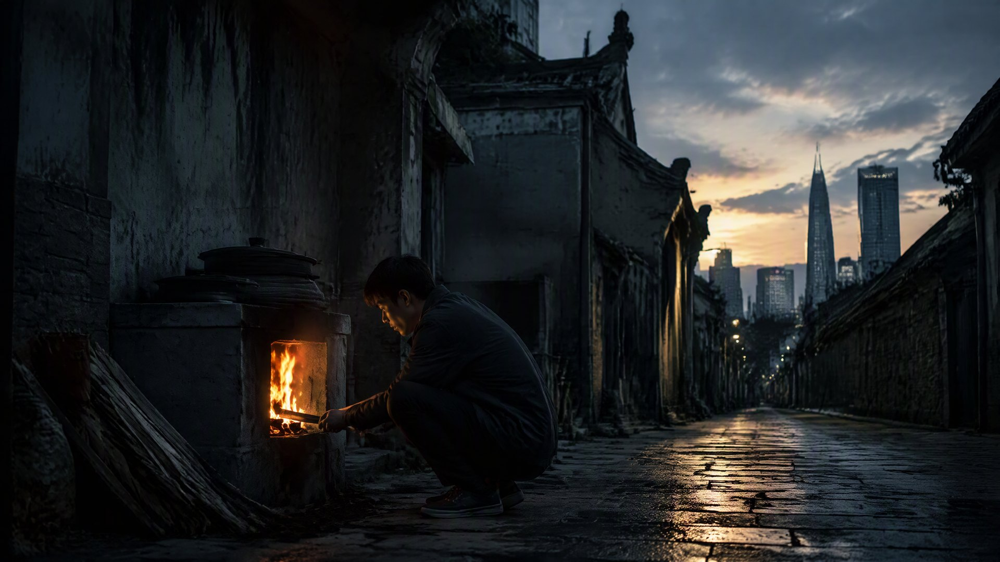

灶火不灭

（全书完）
清晨五点，浦东康桥镇最西端。
一条叫百曲的老街还没醒透，青石板路上浮着薄薄的水汽。街尽头有一间老屋，青砖黛瓦，比周围的新楼矮了半截，像一段没拆完的旧时光。老屋的门楣上挂着一块匾，匾上的字被风雨磨得只剩个轮廓，可仔细看，还能辨出八个字：
灶火为证，方可归汉。
屋里，一口老灶正烧着。灶膛里的火，赤红赤红地跳，把一屋子都映得暖烘烘的。一个头发花白的老人蹲在灶前，正往灶膛里添柴。他添得极慢，极稳，像是在做一件做了几十年的、早已刻进骨头里的事。
“爷爷，粥好了。”一个年轻人从里屋出来，手里端着一碗白粥，粥上浮着几粒葱花，“您怎么又起这么早？”
“灶不能冷。”老人说，眼睛没离开那团火，“你太爷爷传下来的规矩——火家的灶，天不亮就得点着。冷了，就不好引了。”
“都什么年代了，”年轻人笑，“现在谁还用柴火灶？煤气灶、电磁炉，一个开关的事。”
“你懂什么。”老人也笑了，却依旧慢慢地添着柴，“煤气是煤气，灶火是灶火。不一样。”
年轻人不再争辩，蹲下来，陪爷爷看火。火光一跳一跳的，映着一老一少两张脸。
“爷爷，”年轻人忽然问，“咱家，真在这儿住了几百年吗？”
“不是几百年。”老人说，“是七百多年。从元朝末年，咱家老祖宗指灶改姓那天算起。”
“指灶改姓？”
“嗯。”老人的眼神变得悠远起来，像是看见了很远很远的地方，“老祖宗原本不姓火，姓赤，是蒙古人。元末天下大乱，义军查鞑子，专逮小孩问——你姓啥？咱家老祖宗那年才九岁，被兵头子拿刀架在脖子上，他就指着灶膛里的火，说——姓火。”
“后来呢？”
“后来，他就在这儿落了户，立了灶，通了海，打了铁，办了义学。火家一代一代，种田、读书、烧灶，就这么传了下来。中间经历了改朝换代、兵荒马乱，火家的火，一回都没灭过。”
年轻人听着，眼睛慢慢亮了起来。他从小听这个故事，可每次听，都觉得像是第一次听。
“爷爷，”他说，“那口灶，还是老祖宗当年那口吗？”
“不是。”老人摇头，“几百年了，灶砖早换过不知道多少回。可灶膛里的火——”他顿了顿，指着那团赤红的火，“还是那一把火。你老祖宗当年点的，你太爷爷、爷爷、我，一代一代传下来的，就是这把火。烧柴的换了一茬又一茬，火，没变过。”
天渐渐亮了。窗外，隔壁几户人家也起了炊，一缕缕青烟从各家屋顶升起来，和火家老屋的炊烟，缓缓地融在一起，升进晨光里。
年轻人望着那满街的炊烟，忽然觉得鼻子有点酸。
“爷爷，”他轻声说，“我想学烧灶。您教我吗？”
老人转过头，看着这个孙辈，笑了。笑得眼角的皱纹都舒展开来，像灶膛里那团火，亮亮地跳了一下。
“教。”他说，“火家的灶，早晚得交到你手里。学会了，你就懂了——火家为什么七百年，火没灭过。”
“为什么？”
老人伸出手，指了指灶膛里的火，又指了指窗外满街的炊烟，最后指了指自己的心口：
“因为火家的火，从来不在灶膛里。它在一代一代人的手里，在一页一页的书里，在一颗一颗的心里。”
“只要这世上，还有一个姓火的人记得——火，就永远不灭。”
年轻人点点头，蹲到灶前，学着爷爷的样子，往灶膛里，添了他人生的第一把柴。
火，“呼”地一下，蹿得更高了。
赤红的火光，映着这间七百年的老屋，映着墙上那八个字，映着一老一少两张脸，映着窗外升起的、属于这个新的一天的、满街的炊烟。
从元朝末年，松江城西那户灶房里，一个九岁的孩子指着灶膛说出的那一声“姓火”——
到如今，七百年后，一个年轻人，蹲在祖传的老灶前，添下他人生第一把柴。
火，一直在烧。
灶火，不灭。
（全书完）
· 第五卷《祖境》 ·